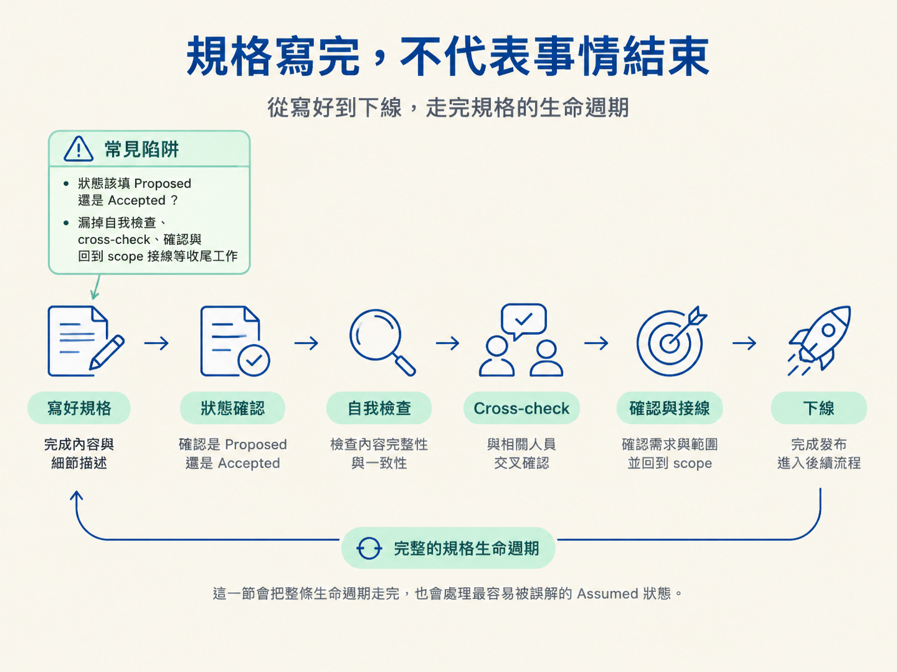

完成這一節後，你應該能用 spec lifecycle 管理規格：說清楚 Proposed、In Progress、Accepted 分別由誰推進，也知道為什麼 Assumed 必須由 /architect ratify。你還會走完規格寫成後的自我檢查、跨模型 cross-check、accept 確認，以及回到 scope 的 linking。
上一節完成訪談後，規格看起來已經寫好了。這時很容易以為任務可以收工，但檔案落地只是起點，不是終點。
第一個坑是狀態混亂。規格裡的 **Status**: 到底該填什麼？剛寫好的規格通常是 Proposed，但為什麼有些規格一開始就是 Accepted？如果沒有分清楚，可能太早宣布決定已經生效，也可能讓已經上線的功能永遠卡在「提案中」。
第二個坑是漏掉收尾工作。規格寫完後，還要檢查欄位是否完整、決定要不要讓另一個模型 cross-check、等你確認內容、拍板狀態，最後回到 scope 把功能接起來，讓 /develop 知道從哪裡開工。少做任何一段，規格都可能變成一座和工程現場斷線的孤島。
這一節會把整條生命週期走完，也會處理最容易被誤解的 Assumed 狀態。

訪談開始前，流程會先掃描目前環境。這些結果會直接影響後續的狀態判斷與規格寫法。
它會查詢遠端是否有新提交；如果本機落後，就提醒你先拉取更新。接著，它會解析出 $SPEC_DIR，必要時建立目錄；確認今天的日期；列出該位置既有的規格，以決定新規格的編號；計算原始檔數量，判斷是否要把讀碼工作交給 scout；讀取專案的 AGENTS.md；最後讀出這個功能的建置策略。
其中有兩項和 lifecycle 特別相關。
第一項是重疊規格偵測。如果找到明顯重疊的規格，流程會先問你：這是新的決定、要就地更新，還是要取代舊規格？如果被重疊的規格狀態是 Assumed，就不能直接走一般選項，而要進入 ratify 流程。
第二項是找出對應的 scope 功能。流程會掃描 docs/scope/，檢查是否有哪一列描述同一件事。找得到或找不到 scope 功能，會決定這份規格採用哪一套狀態規則。
狀態行為的分界很簡單：這份規格是否連著一個可建置的 scope 功能？
如果有 scope 功能連著，例如典型的 FEATURE、ENHANCEMENT，或確實有 scope 列的 ARCHITECTURE 基礎決定，規格狀態就會鏡射功能的生命週期。
/architect 建立規格時，會把狀態寫成 Proposed，但它永遠不負責推進這個狀態。真正推進狀態的是 /develop：功能開始建置時改成 In Progress，功能完成並驗證過、scope 標成 done 時，再改成 Accepted。
因此，在確認面板按下接受，代表的是「規格內容已經確認」，不是「功能已經上線」。功能還沒建置時，規格停在 Proposed 是正確的。
如果沒有 scope 功能連著，例如基礎技術棧或跨檔案標準，這就是獨立的決定規格。它寫出來時是 Proposed；你確認並批准後，就直接變成 Accepted，因為這個決定本身就是交付物，不需要等待後續建置。/develop 不會替這類規格推進狀態。
還有一類規格一出生就是 Accepted：它描述的是已經上線的工作，例如走文件化路徑，或它連到的 scope 功能早已是 existing。這種規格記錄的是既成事實，不是等待實作的提案。
| 狀態 | 意義 | 由誰設定 |
|---|---|---|
Proposed | 規格已寫好、決定已獲同意，但功能尚未建置 | /architect 建立規格時 |
In Progress | 這份規格所管理的功能正在建置 | /develop，功能轉為進行中時 |
Accepted | 功能已建置並驗證完成，scope 也標成 done | /develop 完成時，或由 /sync 對帳 |
Superseded by [NNNN] | 這份規格已被較新的規格取代 | /architect 執行 supersede 時 |
Assumed | 建置建立在尚未正式討論的假設上 | 只有 /develop 能建立，只有 /architect 能清除 |
還有一個容易忽略的結構規則：整個規格目錄裡，只有 index.md 會有 **Status**: 這一行。子規格只負責描述內容，不帶自己的 lifecycle 狀態；所有狀態都由這個保護傘統一治理。
Assumed 反映的是一種「先讓工程往前走，之後再補正式決定」的做法。
當工程師選擇先動手，把某個承重決定留到稍後討論，/develop 會建立一份 Assumed 規格。它記錄的是這次建置採用了什麼假設，而不是已經正式討論出的決定。
這份規格不會阻止功能完成。功能仍然可以被標成 done，但 Assumed 會留下來，提醒團隊這個決定還欠一次正式批准。流程堅持的是「承重決定必須被記錄」，卻不會為了這個標記強行擋住建置。
不過，狀態清理只有一把鑰匙：/architect 必須透過 ratify，確認假設是否成立，或修正原本的方向。

ratify 會先完整讀取這份 Assumed 規格，從 ## Owed decision、## Assumption built on 和 ## Code area 了解三件事：
接著，它會以「實際蓋出來的東西」為錨點，再跑一次正常的設計訪談。結果有兩種。
Assumed，並把狀態設成功能目前所在的生命週期位置。尚未驗證就是 In Progress，已驗證就是 Accepted。這個決定從此不再是臨時品。Assumed 標成 Superseded by [NNNN]，並明確指出這次建置建立在錯誤假設上，應依修正後的規格重做。ratify 完成後，不應該還留著一份狀態為 Assumed 的規格。/develop 負責記下假設，/architect 負責確認或修正它，並補上背後的推理。
規格寫入檔案後，第一步是確認檔案確實存在而且有內容。檔案不見或是空的，就代表寫入失敗；流程會重寫，而不是捏造一份摘要來假裝成功。
接著進行自我檢查。流程會重新讀取剛寫好的規格，逐項確認目前模式要求的段落是否存在。缺失或空白的欄位，會在呈現時直接標示 ⚠️ Incomplete，並指出是哪一個段落需要補上。
然後是交叉檢查（cross-check）。這一步有一條重要規則：流程永遠會先問你要不要執行，絕不自行啟動，也不自行跳過。因為是否需要額外審查是你的決定，流程只能把選項和風險攤開來。
確認面板通常會提供四個選項：
推薦選項取決於功能的流程等級。GA 或 Beta 會強烈推薦「另一個模型」，因為這些等級的承重缺口可能造成實際傷害。Alpha 只有基礎或高風險規格會被推薦 cross-check，其餘情況只是提供選項。Prototype 或沒有 scope 列的規格，則推薦「跳過」；基礎規格仍可選「同一個模型」。
cross-check 的首要任務不是潤飾文字，而是檢查決定是否完整。
它會找出兩類問題：
這些問題就像橋樑裡沒有畫出來的承重點。作者自己重讀時可能完全沒察覺，但建置時一定會有人被迫替規格做決定。

找到缺口後，流程不會默默修正，也不會自動補答案。它會列出每個缺口，附上建議解法，再詢問你要如何處理：
只有在你選定處理方式後，流程才會修改規格。這可以避免 cross-check 變成「另一個 agent 自己替你拍板」。
cross-check 只會產生註記，不會替你完成決策，也不會自動結束流程。執行完 cross-check，或選擇跳過後，規格會交回確認面板：
如果選「要改」，流程會詢問你要改哪裡，然後只針對指定段落做定點編輯，不會從頭重寫整份規格。若選「重想」，就回到相關階段重新討論。
修改完成後，確認面板會再次出現。這個迴圈會持續到你選擇「接受」為止。
按下接受，就是拍板。但狀態要怎麼設定，仍然取決於規格是否連著 scope 功能：
Proposed，等待 /develop 推進。Accepted。批准本身就是交付物，若繼續留在 Proposed，這個決定就會一直懸著。Accepted，確認後維持不動。確認規格後，流程要回到 scope，將規格與功能接起來。這時有一個很容易定位錯的地方：每個功能恰好有一個「決定格」，也就是子任務標籤以 (spec) 結尾的那一格。
這個標籤會依功能不同而不同，例如普通功能可能是 Design it (spec)，技術棧功能可能是 Decide the stack (spec)。因此，定位時要比對 (spec) 這個後綴，不能寫死某一個固定字串。
其他子任務都是執行格。接線時不會把它們一併勾起來。
如果是決策型規格，例如 ARCHITECTURE 技術棧或 CROSS-CUTTING 標準，依規則它沒有 Build plan，因此沒有建置任務可以搬到 scope。
這時流程只會做兩件事：
spec 格連到規格。其他執行格維持原樣，例如技術棧功能上的 Scaffold from the decision 不會被提前勾選。等到 /develop 開始建置時，再從這個決定推導實際步驟。這樣可以避免同一件工作被規格和 scope 重複計算。
如果是可建置的功能規格，流程會把功能更新成可以直接開工的形狀，但只做必要的整理：
· needs a decision。Build it 勾選格。Verify it，Beta 以上加入 Test it。GA 再加入 Review it (fresh model) 與 Document it。in-progress。這裡的核心原則是彙總，而不是倒出所有原子任務。細碎的建置步驟留在規格的 ## Build plan 中，scope 只保留二到五個里程碑。

如果一個功能塞不進大約五個里程碑，通常代表它太大，應該拆分，而不是繼續把更多細節塞進 scope。
所有內容接好後，流程會在對話中用白話摘要：
通常下一步是執行 /clear，開一個乾淨的 session。規格已經寫在磁碟上，之後仍然讀得到；剛才那場冗長的設計對話則不會繼續佔用 context。
接著執行 /develop，把規格建置出來。/architect 的工作在你確認規格的那一刻就完成了；它不會自行呼叫其他 skill。
規格有自己的生命週期。有 scope 功能連著的規格會鏡射功能：/architect建立Proposed，但永遠不推進；/develop在建置時推進到In Progress，完成並驗證後再推進到Accepted。獨立的決定規格在批准時直接變成Accepted；描述既成現實的規格則一出生就是Accepted。整個規格目錄只有index.md帶有狀態。
Assumed是/develop先蓋再決時建立的記錄，不會阻擋功能變成done。只有/architect能透過 ratify 清掉它：假設成立，就補齊正式決定並清除狀態；假設錯誤，就建立修正版，將舊規格標成Superseded by [NNNN]。
規格寫完後，先確認檔案確實寫入，再做自我檢查；是否進行 cross-check 要先問你。cross-check 只列出承重缺口，不會自動修改。接著透過 accept 迴圈拍板，最後回到 scope，以(spec)後綴定位決定格，接上規格、放入二到五個里程碑，並依流程等級補上驗證與測試格。做到這裡，規格才真的能交給/develop開工。